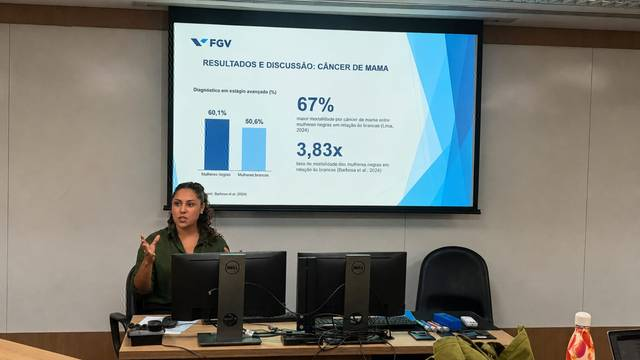
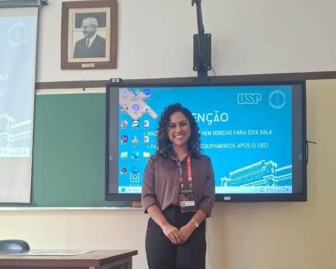

Orientação individual para definir tema, metodologia e texto acadêmico, passo a passo, do zero até a entrega.
Orientação individual, complementar à do seu professor orientador, focada em destravar as etapas onde mais surgem dúvidas.
Transformar uma ideia solta em um tema delimitado e viável para o tempo que você tem.
Quero saber maisOrganização de objetivos, hipóteses e metodologia de forma coerente com o tema escolhido.
Quero saber maisApoio na seleção de fontes, fichamento e construção do referencial teórico do trabalho.
Quero saber maisAjuste de citações, referências e estrutura do documento às normas ABNT.
Quero saber maisOrganização dos pontos principais do trabalho para uma apresentação segura.
Quero saber maisOrientação para transformar parte da sua pesquisa em resumo ou artigo para congressos.
Quero saber maisOrganização e atualização da sua formação, das produções acadêmicas e da participação em eventos, deixando seu currículo pronto para seleções de mestrado, bolsas e editais de concursos públicos.
Graduandos escrevendo monografia, TCC ou projeto de Iniciação Científica, que querem uma orientação individual, complementar à do professor orientador, sem substituí-lo.
Denise Neri é advogada e mestranda em Direito pela Universidade Federal do Rio de Janeiro (UFRJ), pós-graduada em Direito Médico e Hospitalar pela PUC-Rio e graduada em Direito pela UNISAL. Iniciou sua trajetória na pesquisa em 2018 e, desde então, vem publicando artigos, capítulos de livro e trabalhos em congressos nacionais e internacionais, além de integrar grupos de pesquisa na UFF e na PUCRS.
Já passou pelas mesmas dificuldades que você está enfrentando agora: escolher um tema, delimitar um problema de pesquisa, organizar metodologia e cumprir prazo, e quer ajudar você a passar por isso com mais clareza.
Participações recentes em mesas redondas e oficinas sobre direito, tecnologia e saúde.


Conte um pouco sobre seu tema e em que etapa você está. Retorno o quanto antes.
Me conta um pouco sobre seu tema e em que etapa você está. Respondo direto por lá.